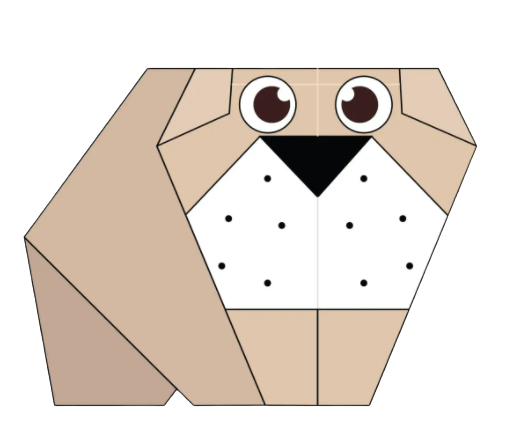
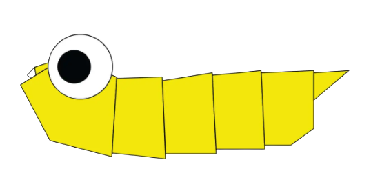
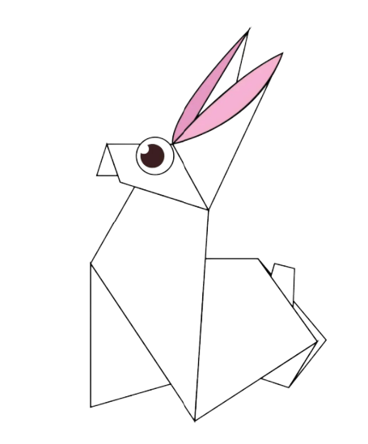

Origami Instructions and Diagrams
Step by Step diagrams are probably the most popular and easiest to follow way to
show how to fold things out of paper.
Trying to find good origami instructions on the Internet can be a lot of work through. To
help your search we've put
together the largest database of free origami
anywhere on the Internet.

Click here to see how to make a origami chameleon here
Intersesting Facts About Chemeleon
- Chameleons are reptiles that are part of the IGUANA SUBORDER
- Changing skin color is an important part of the communication among chameleons
- Most chameleons have a prehensile tail that they use to wrap around the tree branches

Click here to see how to make a origami pigeon here
Intersesting Facts About Pigeon
- Pigeons are incredibly complex and intelligent animals
- Pigeons are renowned for their outstanding navigational abilities
- Pigeons have excellent hearing abilities.

Click here to see how to make a origami panda here
Intersesting Facts About Pandas
- In the past, pandas were thought to be rare and noble creatures
- It is characterised by large, black patches around its eyes, over the ears, and across its round body
- Giant pandas grow to between 1.2m and 1.5m, and weigh between 75kg and 135kg.

Click here to see how to make a origami camel here
Intersesting Facts About Camel
- Camels have three sets of eyelids and two rows of eyelashes to keep sand out of their eyes
- Camels can completely shut their nostrils during sandstorms
- Camels have thick lips which let them forage for thorny plants other animals can’t eat.

Click here to see how to make a origami cicada here
Intersesting Facts About Cicada
- The cicadas are a superfamily, the Cicadoidea, of insects in the order Hemiptera (true bugs)
- Cicadas are medium to large in size, ranging from 2 to 5 cm (0.8 to 2 inches)
- Cicadas have prominent compound eyes set wide apart on the sides of the head.

Click here to see how to make a origami bulldog here
Intersesting Facts About bulldog
- The Bulldog, also known as the English Bulldog or British Bulldog, is a medium-sized dog breed
- It is a muscular, hefty dog with a wrinkled face and a distinctive pushed-in nose
- Bulldogs are popular pets; they were the fifth most popular purebreed in the US in 2017 according to the American Kennel Club.

Click here to see how to make a origami caterpillar here
Intersesting Facts About caterpillar
- Caterpillars are the larval stage of members of the order Lepidoptera
- Caterpillars have soft bodies that can grow rapidly between moults
- Their size varies between species and instars from as small as 1 millimetre (0.039 inches) up to 14 centimetres (5.5 inches).

Click here to see how to make a origami rabbit here
Intersesting Facts About rabbit
- They can't live off carrots.. Cartoons suggest that rabbits can happily survive on a diet of carrots alone
- Some rabbits are as big as a toddler.. Not all rabbits are cute and tiny
- There's some truth to the phrase "breed like rabbits.". Rabbits really are a busy bunch.